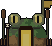
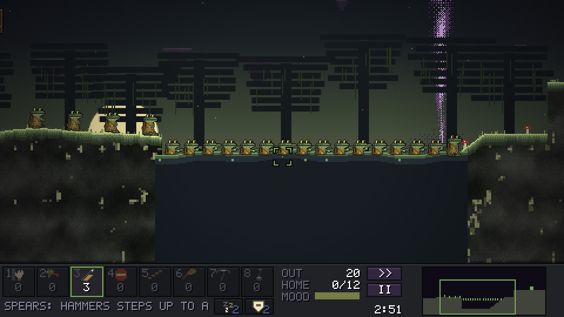
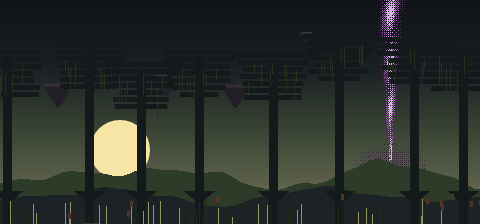

From the journals of the wandering scholar
Of the Swampfolk
Home: Drowned marshLed by: The EldersSubstance: MurkClans: Reedback and Mudgill
In the marsh the water watches you first. Usually the water is the Swampfolk.
There is a line of reed posts at the edge of the marsh, each hung with a small bone. I took them for decoration. A Swampfolk guard, visible only as two eyes above black water, corrected me with a spear.
I waited on the dry side for most of a day. An Elder came at dusk: an old Swampfolk whose authority, as far as I could tell, reached exactly as far as the others chose to let it. We spoke through a younger Swampfolk who translated with obvious reluctance.
They asked whether I had come from the next settlement down the water. When I said I had not, they relaxed a little. When I said I was going there, they did not. I did not stay the night. The air was hot and dry that week, and nobody was in the mood.
Swampfolk live in a mix of larger communities and small isolated settlements, guided by Elders whose authority varies or is unclear.
They guard their territory fiercely and may attack anyone who enters uninvited. Settlements rarely cooperate, and being Swampfolk does not make two settlements trust each other.
Their life centres on water. They swim with ease, but long exposure to dry heat is dangerous to them.
Not yet settled: what the Elders look like, and whether the larger communities look different from small settlements.
As observed in Marching Orders
| In short | Leaping frog people |
|---|---|
| Good at | Swim any water, long tongues |
| Bad at | Dry out in hot worlds |
| Own skills | Tongue (eats gorgers or zips to a wall), Spears (hammers steps up to a wall) |
| Clans | Reedback: +1 tongue if map has it; Mudgill: dry out 10% slower |


site/img/journal/race-swamp-study.webpThey see best from below the surface. Keep to the middle of the path.
The tongue is longer than the arm. I did not measure it twice.


site/img/journal/race-swamp-home.webp